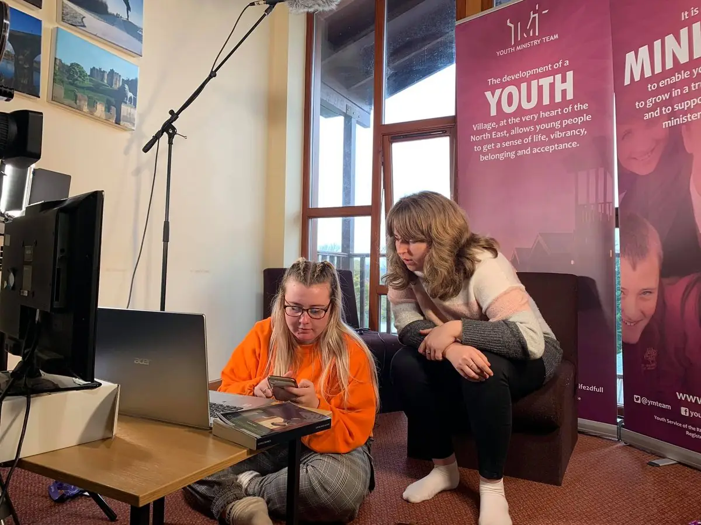
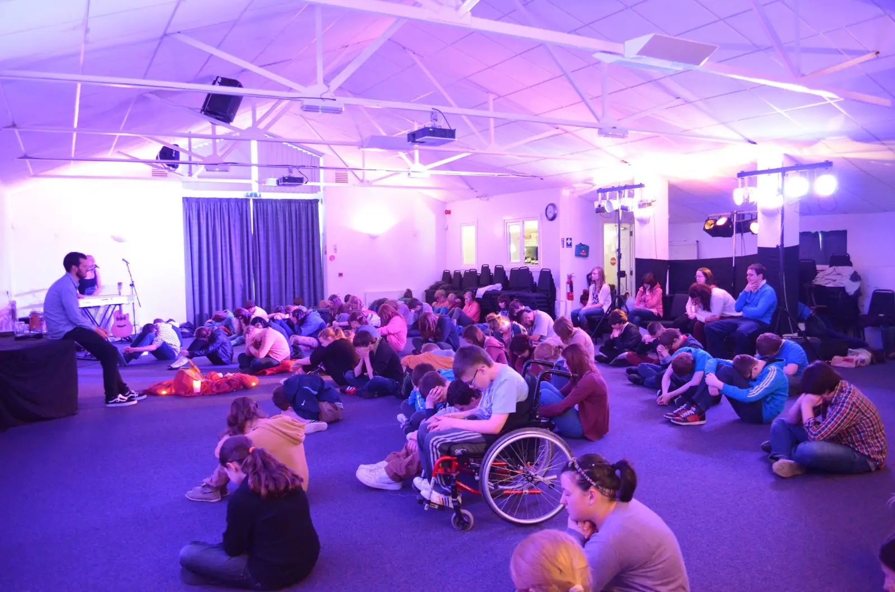

Volunteers aged 16 and over
Festival crew, youth helpers in Lourdes, retreat teams and a year on the Internship.

Photos from the crew



On TikTok
Ways to volunteer
- Festival crew
Set up, run and serve at the summer festivals.
Sign upMore about Festival crew - Lourdes youth helpers
Support assisted pilgrims on the diocesan pilgrimage.
Sign upMore about Lourdes youth helpers - Retreat team
Help lead residential retreats for schools.
Sign upMore about Retreat team - The Source team
Welcome, music, tech and prayer at worship nights.
Sign upMore about The Source team - The Internship
A year in community at the Village, ages 18–30.
Sign upMore about The Internship
What's coming up
Each date shows who it is for and how to take part.
Sign up to volunteer
Email us what you would like to do and when. We will reply with next steps, including the safeguarding checks every volunteer completes.
- You are 16 or over.
- If you are under 18, a parent or carer will need to agree before you take part.
- Every volunteer completes our safeguarding checks.
Before you go
Short formation for helpers.